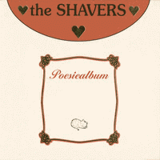

the Shavers - Poesiealbum (Album, 2001)
01 - Mr. Guitar (1:50)
02 - Helemaal (1:41)
03 - Teveel Gedronken (3:15)
04 - Kussen (1:51)
05 - Cor De Moordenaar (3:24)
06 - Ja, Ja, Ja (1:50)
07 - Schatergoud (2:52)
08 - Pipeline (2:08)
09 - Halvarine (4:03)
10 - Botbreuk (1:50)
11 - Poesie (2:21)
12 - Alcohol (5:45)
13 - Pijn (3:58)
14 - Rumble (2:258)
© AG Music :: [AGM 1264]
Notes
Holland.
My experience is based on its Digital release (with only fourteen tracks)
reference information: Discogs®
Review
332/366 (Project 366)
Stunning blend of Modern Rockabilly, Surf music and general Rock'n'Roll. Very tough and rough sound, but so dynamic and magic! With some punky vibe and maybe Pub Rock influences. Today is from Holland and it is another peculiarity, songs on their local language! Sounds goed.